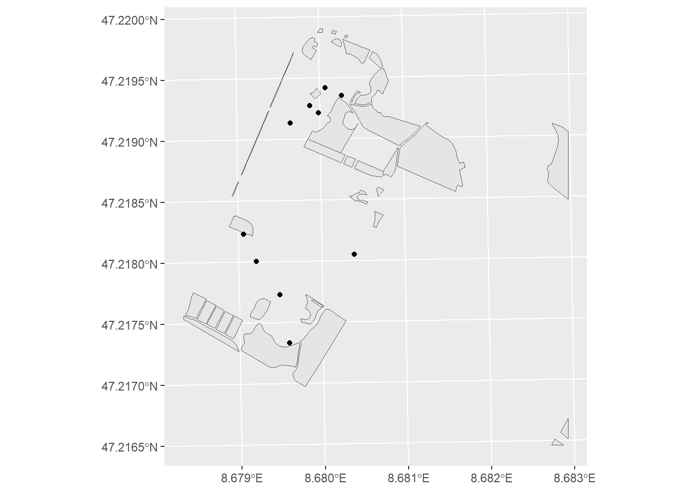
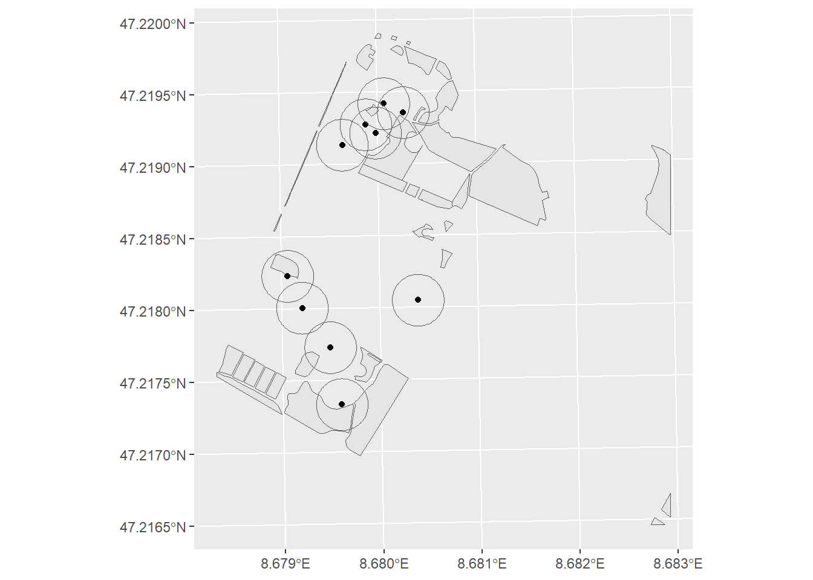
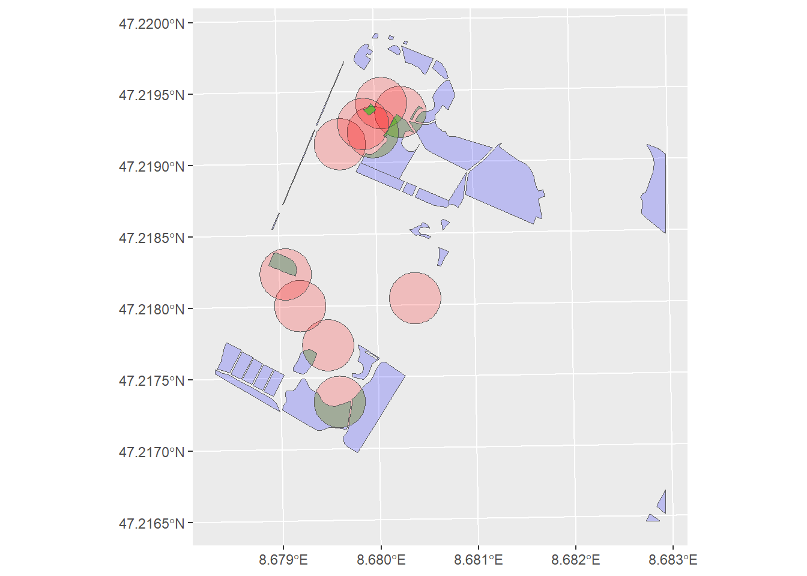
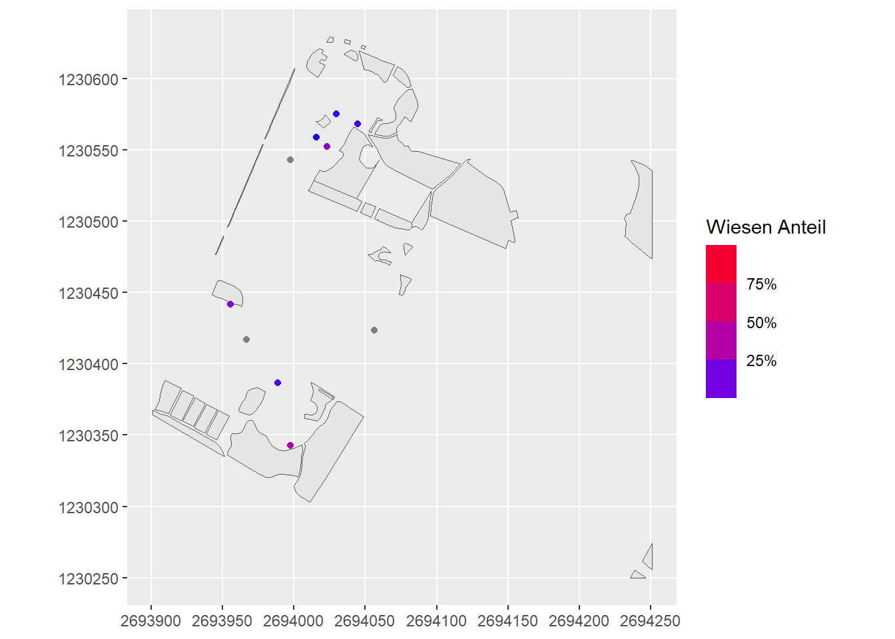
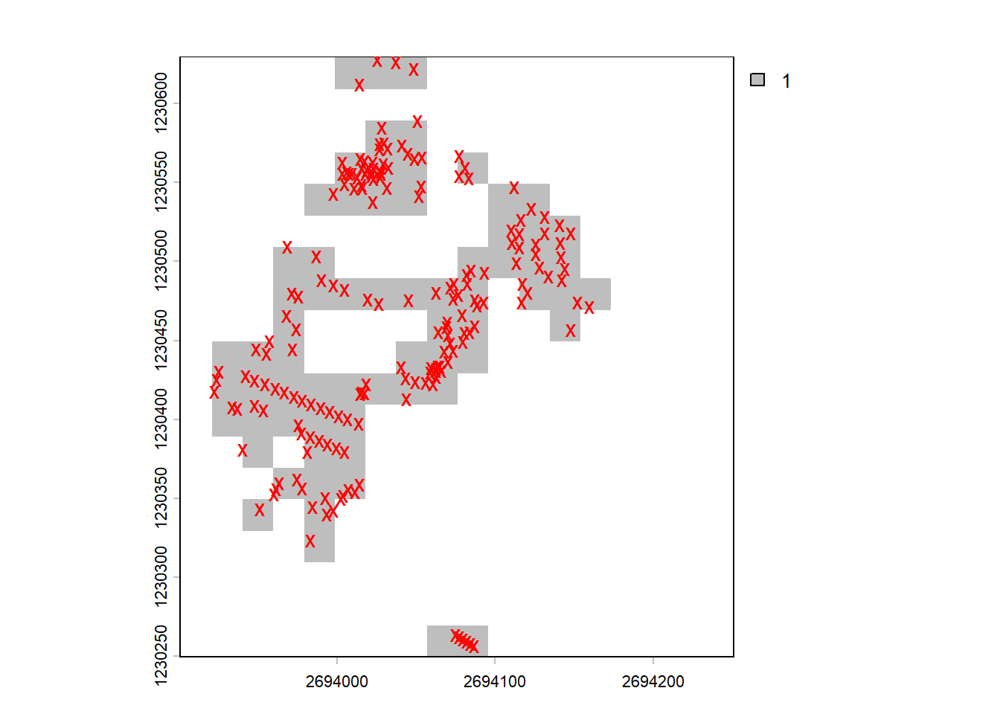
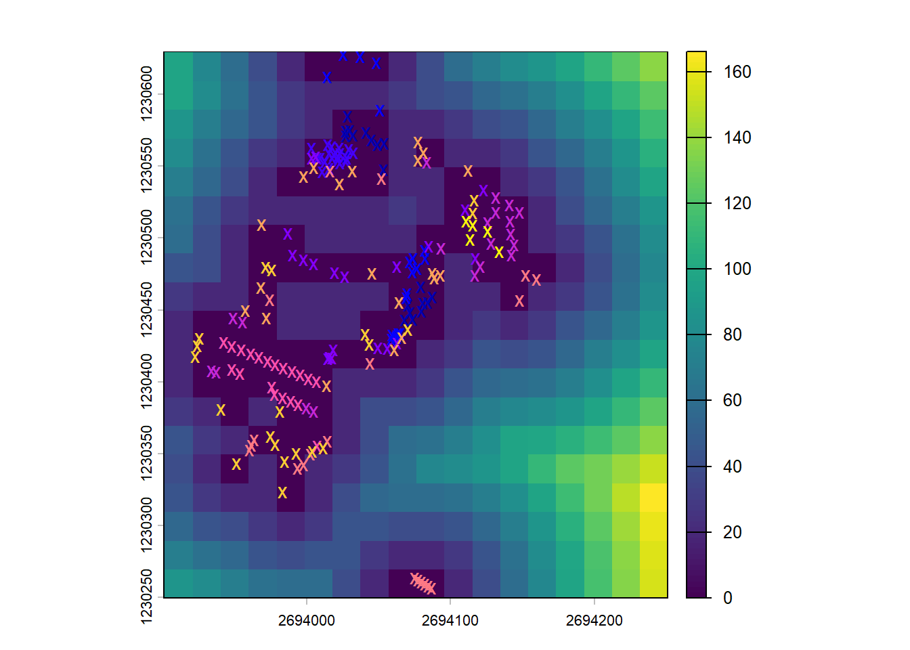

library("dplyr")
library("sf")
library("ggplot2")
wiesen <- read_sf("datasets/rauman/gruental.gpkg", "wiesen")
baeume <- read_sf("datasets/rauman/gruental.gpkg", "baeume")Rauman 2: Übung A
In der letzten Übung haben wir einen Spatial Join zwischen Bäumen und Wiesen durchgeführt, um herauszufinden, ob sich der Baum in einer Wiese befindet oder nicht. Basis waren dafür die Daten vom Campus Grüental (gruental.gpkg)
Heute gehen wir einen Schritt weiter und wollen folgende Frage beantworten: Wie viel Wiese befinden sich in einem Umkreis von 20m um jeden Baum?
Lade dazu die benötigten Libraries und Datensätze in deine Session. Exploriere die Daten und visualisiere sie räumlich.
Um die Übung etwas zu vereinfachen, arbeiten wir erstmals mit nur 10 Bäumen. Diese Bäume befinden sich im Shapefile baume_sample.shp (auf Moodle).
Hinweis
Ein Shapefile ist ein häufig verwendetes, aber inzwischen veraltetes Dateiformat für Geodaten. Es besteht aus mehreren Dateien (.shp, .shx, .prj…), die zusammen die Geometrie und Attribute von Geodaten speichern.
baeume_sample <- read_sf("datasets/rauman/baeume_sample.shp")ggplot() +
geom_sf(data = wiesen) +
geom_sf(data = baeume_sample)
Aufgabe 1
Als erster Schritt müssen wir jeden Baum mit einem 20m Puffer versehen. Nutze dazu st_buffer und speichere den Output als baeume_20m. Schau dir baeume_20m nun genau an. Um welchen Geometrietyp handelt es sich dabei nun?
Musterlösung
baeume_20m <- st_buffer(baeume_sample, 20)Musterlösung
ggplot() +
geom_sf(data = wiesen) +
geom_sf(data = baeume_sample) +
geom_sf(data = baeume_20m, fill = NA)
Aufgabe 2
Berechnen nun die Schnittmenge aus baeume_20m und wiesen mit der Funktion st_intersection und speichere den Output als baeume_wiesen. Exploriere nun baeume_wiesen. Was ist passiert? Überprüfe die Anzahl Zeilen pro Datensatz. Haben diese sich verändert? Wenn ja, warum?
Musterlösung
baeume_wiesen <- st_intersection(baeume_20m, wiesen)
ggplot() +
geom_sf(data = wiesen, fill = "blue", alpha = .2) +
geom_sf(data = baeume_20m, fill = "red", alpha = .2) +
geom_sf(data = baeume_wiesen, fill = "green", alpha = 0.2)
Aufgabe 3
Berechnen nun die Flächengrösse pro Geometrie mit der Funktion st_area(). Speichere den Output in einer neuen Spalte von baeume_wiesen (z.B. mit dem Namen wiesen_flaeche). Tipp: Konvertiere den Output aus st_area in einen nummerischen Vektor mit as.numeric().
Musterlösung
baeume_wiesen$wiesen_flaeche <- as.numeric(st_area(baeume_wiesen))Aufgabe 4 (Optional)
Berechne nun aus wiesen_flaeche den wiesen_anteil. Tipp: 100% ist die Kreisfläche aus \(r^2\times \pi\), wobei in unserem Fall \(r = 20\) entspricht.
Musterlösung
kreisflaeche <- 20^2 * pi
baeume_wiesen$wiesen_anteil <- baeume_wiesen$wiesen_flaeche / kreisflaecheÜberführe anschliessend die berechneten Anteilswerte in den Datensatz baeume mit einem left_join zwischen baeume und baeume_wiesen. Welche Spalte wäre für diesen Join geeignet? Hinweis: Nutze st_drop_geometry(), um die Geometriespalte in baeme_wiesen vor dem Join zu entfernen.
Musterlösung
baeume_wiesen_df <- st_drop_geometry(baeume_wiesen)
baeume_2 <- left_join(baeume_sample, baeume_wiesen_df, by = "baum_id")
ggplot() +
geom_sf(data = wiesen) +
geom_sf(data = baeume_2, aes(colour = wiesen_anteil)) +
scale_color_binned("Wiesen Anteil", low = "blue", high = "red", limits = c(0, 1), label = scales::label_percent()) +
coord_sf(datum = 2056)
Aufgabe 5
Nun habt ihr ein paar Vektor-Operationen wie st_buffer(), st_intersection() und st_area() durchgeführt. Gewisse Fragen lassen sich aber besser in der Raster-Welt beantworten. Wollen wir beispielsweise für jeden Punkt im Raum wissen, wie weit der nächstgelegene Baum ist, lässt sich das besser in einem Raster darstellen.
Bevor wir die Frage aber beantworten können, müssen wir den Vektordatensatz in ein Rasterdatensatz konvertieren. Dafür wiederum braucht es ein Raster “Template”, damit R in etwa weiss, wie der Raster-Output auszusehen hat.
# Um mit Raster arbeiten zu können brauchen wir das Package "terra"
library("terra")
# Um ein Vektor Datensatz zu vektorieren, brauchen wir ein Template.
# Für das Template nutzen wir "wiesen" und setzen eine Zellgrösse (resolution)
template <- rast(wiesen, resolution = 20)
# Mit rasterize können wir "baeume" in einen Raster konvertieren
# Nutzt hier wieder alle bäume, nicht baeume_sample
baeume_rast <- terra::rasterize(baeume, template)Der Unterschied zwischen Raster und Vektor kann sehr anschaulich dargestellt werden, wenn die beiden Datensätze übereinander gelagert werden.
plot(baeume_rast, col = "grey")
plot(baeume, add = TRUE, col = "red", pch = "x")
Mit baeume_rast können wir nun mit der Funktion distance() die Distanz zu jedem Baum berechnen:
baeume_dist <- distance(baeume_rast)
plot(baeume_dist)
plot(baeume, add = TRUE, pch = "x")